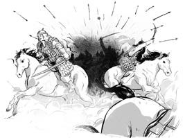
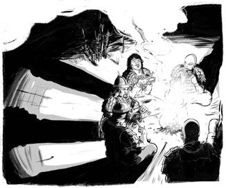
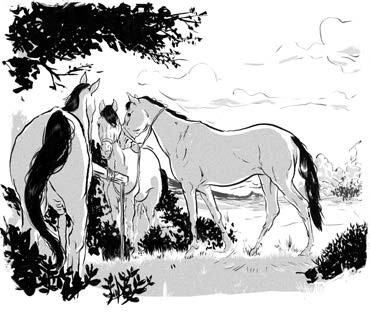
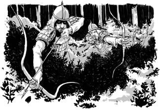
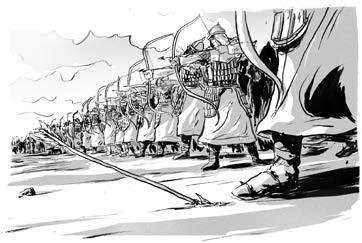
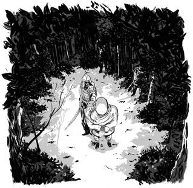
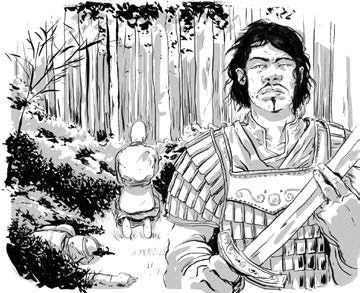
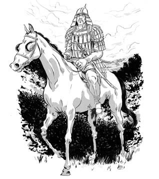

Một người chăn cừu đã báo cho Thiết Mộc Chân về kế hoạch phục kích. Đoàn của ông rút chạy và bị người của Thoát Lý truy đuổi. Cuối cùng, Thiết Mộc Chân cùng mười chín người chạy đến hồ Baljuna. Họ đến từ chín bộ tộc khác nhau, bao gồm người Ki-tô giáo, Phật giáo và Hồi giáo. Một vài người, trong đó có cả Thiết Mộc Chân, tôn thờ Trời Xanh Vĩnh Cửu.

;Họ không còn nhiều lương thực. Khi một con ngựa hoang xuất hiện, họ cho đó là một điềm lành. Em trai Thiết Mộc Chân là Cáp Tát Nhi bắt và giết ngựa để làm thức ăn. Họ uống nước hồ và nguyện trung thành vĩnh viễn với Thiết Mộc Chân. Họ sẽ không bị đánh bại dễ dàng.

Thiết Mộc Chân truyền tin cho binh sĩ đánh thẳng vào đội quân của Thoát Lý. Trạm ngựa được lập ra suốt dọc đường. Thiết Mộc Chân cùng người của mình phi hết tốc lực, rời hồ Baljuna. Khi ngựa kiệt sức, những chú ngựa khỏe mạnh khác lại đứng đợi họ sẵn ở dọc đường. Thiết Mộc Chân gọi đó là “thần tốc”, bởi họ có thể di chuyển rất nhanh chóng.

.Thoát Lý cho rằng Thiết Mộc Chân còn ở rất xa và hoàn toàn bất ngờ khi bị tấn công. Thiết Mộc Chân giành chiến thắng nhanh chóng. Thoát Lý đã cố tẩu thoát nhưng đã bị bắt lại và xử tử.
Thiết Mộc Chân tiếp tục tới vùng thảo nguyên phía Tây. Ở đó ông sẽ tấn công người Nãi Man - đồng minh trước đây của Trát Mộc Hợp - để thống trị toàn bộ thảo nguyên Mông Cổ.
Quân số của Thiết Mộc Chân bấy giờ đang suy giảm. Đêm trước trận chiến, Thiết Mộc Chân lệnh cho mỗi người thắp năm ngọn lửa. Nó sẽ khiến quân của ông trông đông hơn thực tế. Trước khi Mặt trời mọc, ông lại cho một đội quân tấn công thành những nhóm nhỏ theo “đội hình bụi cỏ lăn”. Các thập hộ nhẹ nhàng tiếp cận quân địch, sau đó tản ra bắn tên vào các vị trí khác nhau. Trước khi quân địch kịp đánh trả, lính của Thiết Mộc Chân lại tản ra. Điều này khiến quân địch bối rối.
Vào lúc rạng sáng, lính của Thiết Mộc Chân dàn thành những hàng người san sát. Hàng đầu tiên bắn tên vào lính của Nãi Man, sau đó tản ra cho hàng cung thủ tiếp theo. Đó được gọi là “đội hình sóng mặt hồ”, bởi binh sĩ lúc này sẽ như những đợt sóng trên mặt nước - khi đợt lính này tản ra, sẽ có một đợt lính khác thế chỗ.
Để đáp trả, quân Nãi Man tản ra phòng thủ thành một hàng dài. Lúc này, Thiết Mộc Chân điều quân thành hình tam giác theo “đội hình mũi khoan”, đánh xuyên qua tuyến phòng thủ của địch.
Quân Nãi Man đã bị áp đảo về chiến thuật. Trong một đêm không trăng, rất nhiều người đã cố gắng trốn thoát. Nhưng vì không thể nhìn thấy đường, họ đã rơi xuống một hẻm núi rất sâu. Một số ít binh sĩ Nãi Man còn lại đã bại trận ngay sáng hôm sau.

.Trát Mộc Hợp cùng một nhóm quân chạy trốn vào rừng. Suốt một năm, họ lang bạt, săn bắt động vật, giống như những gì Thiết Mộc Chân đã trải qua thuở thiếu thời. Cuối cùng, người của Trát Mộc Hợp chán nản và phản bội ông. Trát Mộc Hợp đã tiễn họ sang thế giới bên kia.

.Thiết Mộc Chân cho Trát Mộc Hợp cơ hội cuối cùng để bỏ qua quá khứ và trở lại làm anh em một lần nữa. “Trong những tháng ngày chinh chiến, chính người đã giúp đỡ ta!” Ông nói.
Nhưng Trát Mộc Hợp nói rằng hai người sẽ trở thành bạn tốt chỉ khi ở thế giới bên kia. Ông nói với người anh em của mình: ”Hãy kết liễu ta và đặt hài cốt của ta trên vùng đất cao.” Từ đó, ông có thể dõi theo Thiết Mộc Chân và người của mình mãi mãi.

Thiết Mộc Chân đã thực hiện mong muốn của Trát Mộc Hợp. Người anh em kết nghĩa của ông đã từ giã cõi đời.
Và Thiết Mộc Chân, lúc này đã bốn mươi ba tuổi, trở thành người cai trị duy nhất của thảo nguyên.


.